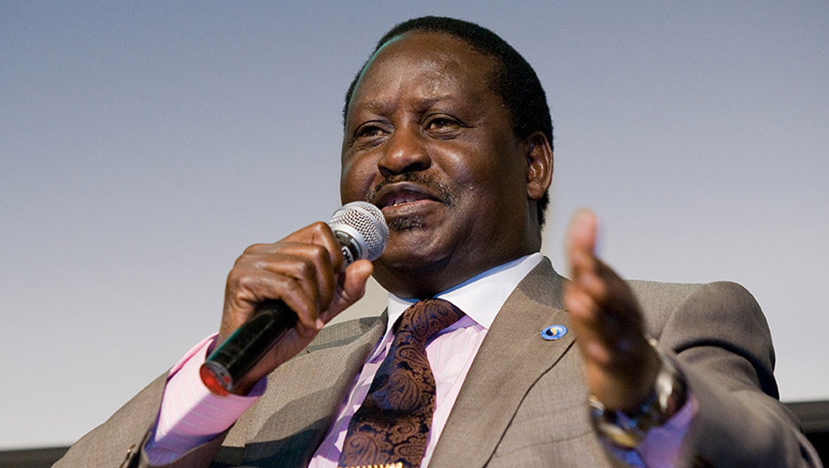

Hon. Raila Amollo Odinga
Raila Amolo Odinga is a Kenyan politician who served as the Prime Minister of Kenya from 2008 to 2013

Hon. Raila Odinga during one of the functions he attended
Here's a timeline of Raila Odinga's life:
- 1945 - Born on January 7th 1945 in Maseno, Kenya to Mary Ajuma Odinga and Jaramogi Oginga Odinga. He went to Kisumu Union Primary School, Maranda Primary and Maranda High School where he stayed until 1962
- 1962 - He spent two years at the 'Herder Institut', part of the 'University of Leipzig' in East Germany. He then earned a scholarship to the 'Technical School' in Magdeburg, East Germany, where he graduated in 1970 with a degree in Mechanical engineering.
- 1971 - While still teaching at the 'University of Nairobi' he established what would become 'East African Spectre Ltd.' a company manufacturing liquid petroleum gas cylinder
- 1974 - He left his lecturer job at the 'University of Nairobi' and began working at the 'Kenya Bureau of Standards' as a group standards manager. Four years later he was promoted to Deputy Director of the 'Kenya Bureau of Standards.'
- 1982 - He was accused of collaborating with the plotters of a failed coup attempt against the President that was led by the late Ochuka. He was charged with treason and imprisoned, without trial, for six years.
- 1989 - He was released from prison on June 12, 1989, but a year later was arrested again.
- 1991 - Released from prison on June 21, 1991, and in October left Kenya for Norway. His decision to leave his motherland was probably because of the assassination threats he claimed to have received from the Kenyan government.
- 1992 - He returned to Kenya and joined 'FORD', the 'Forum for the Restoration of Democracy.' He was elected Vice Chairman of the ‘General Purposes Committee of FORD'. In the same year of 1992, 'FORD' split into two factions, 'FORD-Kenya' led by Raila's father, and 'FORD-Asili' led by Kenneth Matiba. Raila was appointed Deputy Director of Elections of 'FORD-Kenya. The same year, he won a seat in Parliament and began to be known as one of the fathers of multi-party democracy in the country.
- 1997 - He ran for President in the 1997 General Election, finishing third but keeping his seat in Parliament. After the election he began to support President Moi's government, leading a merger between his party and Moi's 'KANU' party
- 2002 - In opposition of President Moi's choice of presidential candidate, Raila left 'KANU' to form the 'Liberal Democratic Party.' This party then joined with the 'National Alliance of Kenya' to form the 'National Rainbow Coalition'. In the later part of the year, he was appointed minister of roads, public works and housing in the new President's cabinet.
- 2005 - Following a political controversy the President Mwai Kibaki dismissed his entire cabinet and reassembled it, without Hon Raila Odinga and his allies, leading him to form a new coalition, the "Orange Democratic Movement."
- 2007 - Raila ran for president again, narrowly losing. He disputed the result, and widespread violence and rioting broke out.
- 2008 - As a result of the violence following the 2007 election, former UN Secretary General Kofi Annan stepped in and helped reach an agreement between Odinga and the President to form a coalition government, with Odinga being sworn in on April 17, 2008 as Prime Minister.
- 2013 - He ran again for president on "Orange Democratic Party" Ticket again and narrowly losing to President Uhuru Kenyatta of "Jubilee Party". At first challenging the results, when the Supreme Court upheld them, he conceded the election.
- 20th October 2018- To date - Raila is currently serving this great continent as the "African Union High Representative for Infrastructure Development"
The Vision 2030 is aimed at transforming Kenya from a struggling
third-world economy into a second world economy - We do believe that it
is a realizable objective; we don't believe that it is utopia. We know
that it has been done in some.
-- Former Kenyan Prime Minister - Hon Raila Odinga
For some more comprehensive information read about the father of democracy as he is know at RAO Official Website